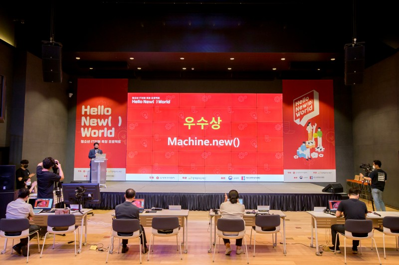
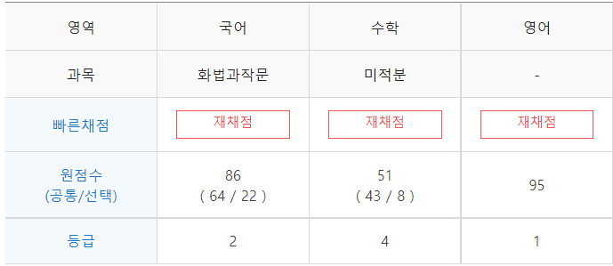

단순히 코딩이 좋아서 고2까지 코딩만 하고 공부를 안했습니다. 결과는 수시를 망쳤어요~ 여러분들은 내신을 꼭 챙기시길 바랄게요
나름 찬란했던 시절
중학교 들어가서부터 코딩과 영상 편집을 독학하며 혼자서 재밌는 것들을 많이 만들면서 개발자의 꿈을 막연하게 키워왔습니다. 솔직히 이때까진 나정도 실력이면 특기자 전형으로 대학 갈거라고 생각했어요.
그렇게 인생 최대의 역작인 저예산 rise를 만들고 중학교를 졸업했습니다
현실 직시
오만하고 어리석었던 저는 자신이 디미고나 선린고를 갈 것이라 자부하며 고등학교 지원서를 준비하기 시작했습니다.
하지만 간과한 사실이 하나 있죠. 내신을 개 망쳤다는 것입니다. 평균 5등급이라는 압도적인 내신으로 결국 소프트웨어 특성화고 문을 두드려보지도 못하고 일반고를 가게 되었습니다.
일줄 알았는데...
혜성처럼 등장한 DKSH
갑자기 학교로 날아든 한 휴지곽, 그 표면엔 새로 생긴 소프트웨어 특성화고
D K S H
지푸라기라도 잡는 심정으로 특별 전형에 지원했습니다
나의 구원자
과연 나같은 공부 고자가 특성화고를 들어갈 수 있을까? 라는 생각으로 본 면접. 간절하게 가고싶은 학교였기에 1달동안 하지도 않은 수학책을 펴내 꾸역꾸역 공부했고, 마침내 면접날..
DKSH 입학 테스트 - 수학 영역
루트 4의 값은? :
피타고라스의 정의는? :
... 공부 하지 말걸 ...
충격적인 문제 수준, 저는 학교에 대한 신뢰감을 조금 잃어버렸습니다.
하지만 일반고보단 나을 것이라 생각. 지금 생각해보면 DKSH는 저의 구원자였던거 같네요
물 만난 물고기
DKSH에 온 것을 절대 후회 안했습니다. 오히려 너무 잘한 선택이라고 생각했어요. 1학년 첫 교실을 딱 들어오자 마자 걱정과 달리 코딩에 관심있는 친구들이 많았고, 공통 주제가 통했기에 빠르게 친해졌습니다.
정말 재밌게 생활하면서 보냈습니다. 만들고 싶은건 다 만든거 같아요. 같이 팀을 꾸려서 대회도 나가보고, 좋아하는 영상도 만들고..
이게 학교 공식 영상보다 조회수 많음..

여기서 Vue.js를 사용해서 UI 디자인을 담당했습니다.
50만원 받아서 고기 사먹었음!!
이렇게 나름대로 재미있고 생산적인 삶을 살았습니다. 그런데..
닥쳐온 고3
생각없이 하고싶은거 하면서 살다보니 벌써 고3이네요..! 슬슬 대학 걱정이 들기 시작하면서 지난 2년간의 족적을 확인해보았습니다.
시험
국어
수학
영어
전공
1학년 1학기 중간
2등급
7등급
4등급
A
1학년 1학기 기말
3등급
6등급
3등급
1학년 2학기 중간
4등급
6등급
3등급
A
1학년 2학기 기말
2등급
5등급
4등급
2학년 1학기 중간
4등급
5등급
2등급
A
2학년 1학기 기말
5등급
5등급
3등급
2학년 2학기 중간
4등급
3등급
3등급
A
2학년 2학기 기말
4등급
2등급
2등급
오우야 인생 망하는 소리 들린다 ㅋㅋ. 건질 게 전공밖에 없네요.
근데 제가 모의고사는 내신보단 낫거든요..

이번 3모인데.. 네.. 내신보단 확실히 낫죠..?
그래서 정시파이터 하려고요.
하지만 힘들다
3월 개학하자마자 정시파이터 선언하고 전공과목 시간에서도 정시공부를 하기 시작했습니다.
하지만 비참하더라고요. 제가 그렇게 좋아하는 전공 시간에 마치 깍두기처럼 떠도는게.